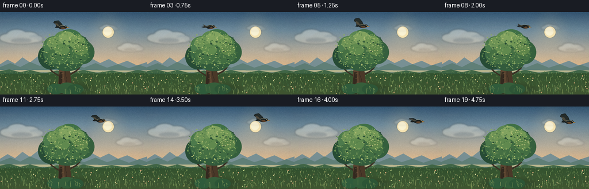
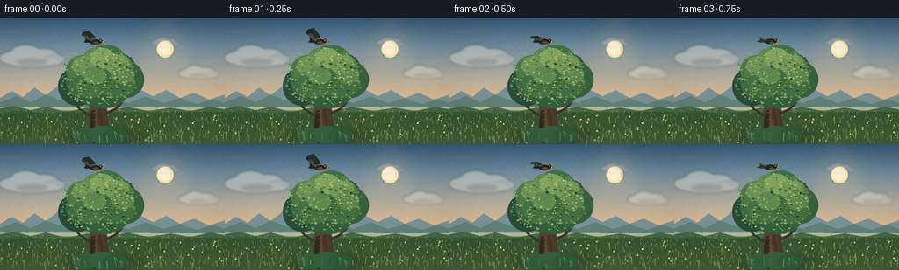
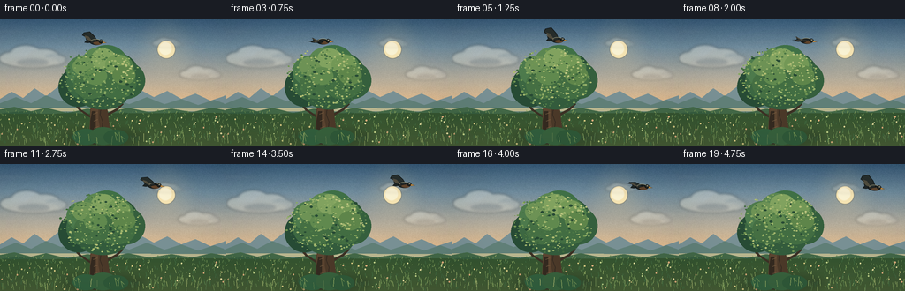
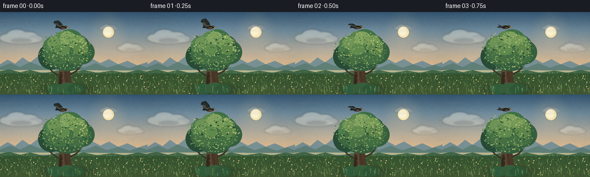
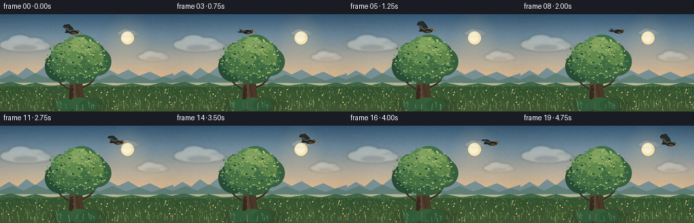
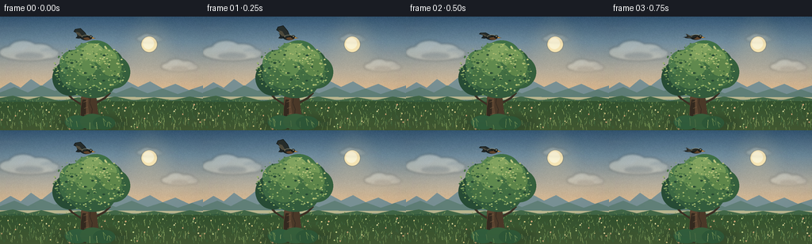

CODING AGENTS AS PIXEL WORLD MODELS
traex/DeepSeek-V4.1-Flash · dynamic_spatial_relationship_0045
点击播放 · 原生 RGB 像素
逐轮保存的候选
回放视频、检查图与代码变化。
每份候选均可单独播放。实际图片检查记录在下方工具轨迹中。
候选 01播放与检查图
点击播放 · 原生 RGB 像素


展开代码变化
--- 上一保存版本
+++ 本次保存版本
@@ -0,0 +1,491 @@
+from __future__ import annotations
+
+import math
+from pathlib import Path
+
+import numpy as np
+from PIL import Image, ImageChops, ImageDraw, ImageFilter
+
+from artifact_io import save
+
+
+ROOT = Path(__file__).resolve().parent
+WIDTH, HEIGHT = 256, 144
+FRAMES, FPS = 20, 4.0
+SS = 3 # Render at 3x and downsample for clean, anti-aliased edges.
+CW, CH = WIDTH * SS, HEIGHT * SS
+
+
+def rgb(hex_value: str) -> tuple[int, int, int]:
+ hex_value = hex_value.lstrip("#")
+ return tuple(int(hex_value[i : i + 2], 16) for i in (0, 2, 4))
+
+
+class Painter:
+ """Draw using coordinates measured in the final 256x144 image."""
+
+ def __init__(self, image: Image.Image):
+ self.image = image
+ self.draw = ImageDraw.Draw(image)
+
+ @staticmethod
+ def point(x: float, y: float) -> tuple[int, int]:
+ return round(x * SS), round(y * SS)
+
+ def points(self, values) -> list[tuple[int, int]]:
+ return [self.point(x, y) for x, y in values]
+
+ def polygon(self, values, fill, outline=None, width=1):
+ self.draw.polygon(
+ self.points(values),
+ fill=fill,
+ outline=outline,
+ width=max(1, round(width * SS)),
+ )
+
+ def ellipse(self, box, fill, outline=None, width=1):
+ x0, y0, x1, y1 = box
+ self.draw.ellipse(
+ (round(x0 * SS), round(y0 * SS), round(x1 * SS), round(y1 * SS)),
+ fill=fill,
+ outline=outline,
+ width=max(1, round(width * SS)),
+ )
+
+ def line(self, values, fill, width=1):
+ self.draw.line(
+ self.points(values),
+ fill=fill,
+ width=max(1, round(width * SS)),
+ joint="curve",
+ )
+
+ def arc(self, box, start, end, fill, width=1):
+ x0, y0, x1, y1 = box
+ self.draw.arc(
+ (round(x0 * SS), round(y0 * SS), round(x1 * SS), round(y1 * SS)),
+ start=start,
+ end=end,
+ fill=fill,
+ width=max(1, round(width * SS)),
+ )
+
+
+def vertical_gradient(stops: list[tuple[float, str]]) -> Image.Image:
+ ys = np.linspace(0.0, 1.0, CH, dtype=np.float32)
+ colors = np.zeros((CH, 3), dtype=np.float32)
+ for index in range(len(stops) - 1):
+ p0, c0 = stops[index]
+ p1, c1 = stops[index + 1]
+ mask = (ys >= p0) & (ys <= p1)
+ local = (ys[mask] - p0) / max(p1 - p0, 1e-6)
+ colors[mask] = np.asarray(rgb(c0))[None, :] * (1 - local[:, None])
+ colors[mask] += np.asarray(rgb(c1))[None, :] * local[:, None]
+ row = np.clip(colors, 0, 255).astype(np.uint8)
+ return Image.fromarray(np.repeat(row[:, None, :], CW, axis=1), "RGB")
+
+
+def add_sky_texture(image: Image.Image, rng: np.random.Generator) -> None:
+ # Fine cloud striations and a soft atmospheric grain keep the gradient alive.
+ haze = Image.new("RGBA", image.size, (0, 0, 0, 0))
+ p = Painter(haze)
+ for _ in range(34):
+ x = rng.uniform(-20, WIDTH + 20)
+ y = rng.uniform(9, 88)
+ length = rng.uniform(18, 68)
+ height = rng.uniform(0.7, 2.5)
+ alpha = int(rng.uniform(7, 18))
+ p.ellipse((x, y, x + length, y + height), (255, 244, 223, alpha))
+ haze = haze.filter(ImageFilter.GaussianBlur(1.8 * SS))
+ image.alpha_composite(haze)
+
+ grain = rng.normal(0, 2.0, (HEIGHT, WIDTH, 1)).repeat(3, axis=2)
+ grain = np.asarray(Image.fromarray(np.uint8(np.clip(128 + grain, 0, 255))).resize(
+ (WIDTH, HEIGHT), Image.Resampling.BILINEAR
+ )).astype(np.float32) - 128
+ base = np.asarray(image.convert("RGB"), dtype=np.float32)
+ base += np.repeat(np.repeat(grain, SS, axis=0), SS, axis=1)
+ image.paste(Image.fromarray(np.uint8(np.clip(base, 0, 255))), (0, 0))
+
+
+def add_sun(image: Image.Image) -> None:
+ glow = Image.new("RGBA", image.size, (0, 0, 0, 0))
+ p = Painter(glow)
+ for radius, alpha in ((37, 10), (28, 15), (21, 24), (16, 42)):
+ p.ellipse((188 - radius, 35 - radius, 188 + radius, 35 + radius),
+ (255, 211, 139, alpha))
+ glow = glow.filter(ImageFilter.GaussianBlur(7.0 * SS))
+ image.alpha_composite(glow)
+
+ disk = Image.new("RGBA", image.size, (0, 0, 0, 0))
+ p = Painter(disk)
+ p.ellipse((178, 25, 198, 45), (255, 235, 181, 230))
+ p.ellipse((180, 27, 194, 41), (255, 247, 215, 240))
+ disk = disk.filter(ImageFilter.GaussianBlur(0.35 * SS))
+ image.alpha_composite(disk)
+
+
+def make_cloud(width: float, height: float, opacity: int) -> Image.Image:
+ pad = 14
+ layer = Image.new("RGBA", (round((width + 2 * pad) * SS), round((height + 2 * pad) * SS)),
+ (0, 0, 0, 0))
+ p = Painter(layer)
+ x0, y0 = pad, pad
+ p.ellipse((x0 + width * 0.02, y0 + height * 0.35, x0 + width * 0.43, y0 + height * 0.92),
+ (246, 241, 224, opacity))
+ p.ellipse((x0 + width * 0.18, y0 + height * 0.08, x0 + width * 0.63, y0 + height * 0.78),
+ (255, 250, 235, opacity))
+ p.ellipse((x0 + width * 0.43, y0 + height * 0.22, x0 + width * 0.88, y0 + height * 0.88),
+ (250, 243, 225, opacity))
+ p.ellipse((x0 + width * 0.65, y0 + height * 0.45, x0 + width * 0.98, y0 + height * 0.94),
+ (236, 231, 217, max(20, opacity - 30)))
+ p.ellipse((x0 + width * 0.10, y0 + height * 0.55, x0 + width * 0.88, y0 + height * 1.02),
+ (255, 246, 225, max(20, opacity - 15)))
+ # Warm undersides suggest late-afternoon light.
+ p.ellipse((x0 + width * 0.28, y0 + height * 0.67, x0 + width * 0.73, y0 + height * 0.96),
+ (222, 198, 177, max(8, opacity // 4)))
+ return layer.filter(ImageFilter.GaussianBlur(1.4 * SS))
+
+
+def draw_distant_landscape(image: Image.Image) -> None:
+ p = Painter(image)
+ p.polygon(
+ [(0, 100), (0, 91), (13, 83), (26, 90), (39, 79), (52, 88), (66, 77),
+ (81, 87), (96, 80), (110, 91), (126, 84), (142, 91), (157, 80),
+ (174, 89), (189, 82), (205, 91), (221, 85), (238, 93), (256, 87),
+ (256, 105), (0, 105)],
+ rgb("#789094"),
+ )
+ p.polygon(
+ [(0, 101), (0, 96), (18, 89), (35, 96), (52, 87), (69, 94), (88, 88),
+ (106, 96), (126, 90), (146, 97), (166, 89), (186, 97), (205, 91),
+ (224, 98), (242, 92), (256, 97), (256, 108), (0, 108)],
+ rgb("#607f77"),
+ )
+ # A thin, luminous horizon separates the hills from the field.
+ p.polygon([(0, 101), (256, 102), (256, 105), (0, 105)], rgb("#b8b58e"))
+
+ p.polygon(
+ [(0, 103), (16, 100), (35, 105), (52, 101), (76, 107), (99, 102),
+ (122, 106), (145, 101), (169, 106), (194, 102), (217, 106),
+ (239, 101), (256, 104), (256, 144), (0, 144)],
+ rgb("#426746"),
+ )
+ p.polygon(
+ [(0, 107), (28, 105), (55, 109), (81, 106), (111, 111), (139, 106),
+ (169, 110), (201, 106), (229, 110), (256, 107), (256, 144), (0, 144)],
+ rgb("#355b3d"),
+ )
+
+
+def draw_field(image: Image.Image, rng: np.random.Generator) -> None:
+ p = Painter(image)
+ # Broad tonal bands, then short blades and tiny flowers for texture.
+ for index in range(9):
+ y = 108 + index * 4.2
+ color = (52 + index * 2, 83 + index, 47 + index // 2)
+ p.polygon([(0, y), (256, y - 1.2), (256, y + 4), (0, y + 4.3)], color)
+
+ for _ in range(450):
+ x = rng.uniform(0, WIDTH)
+ y = rng.uniform(105, HEIGHT)
+ depth = (y - 105) / 39
+ length = rng.uniform(1.2, 4.3) * (0.55 + depth)
+ lean = rng.uniform(-1.2, 1.2)
+ color_choice = rng.integers(0, 4)
+ colors = ("#5f8049", "#749354", "#8ba35f", "#3f683f")
+ p.line([(x, y), (x + lean, y - length)], rgb(colors[color_choice]),
+ width=0.55 + depth * 0.25)
+
+ for _ in range(55):
+ x = rng.uniform(2, 254)
+ y = rng.uniform(111, 142)
+ radius = rng.uniform(0.45, 1.0)
+ color = rng.choice(["#d9ca83", "#e8dd9e", "#c5d58b", "#d7a878"])
+ p.ellipse((x - radius, y - radius, x + radius, y + radius), rgb(str(color)))
+
+
+def draw_tree(image: Image.Image, rng: np.random.Generator) -> None:
+ p = Painter(image)
+
+ # Ground shadow anchors the tree.
+ shadow = Image.new("RGBA", image.size, (0, 0, 0, 0))
+ sp = Painter(shadow)
+ sp.ellipse((69, 126, 164, 145), (19, 39, 28, 75))
+ shadow = shadow.filter(ImageFilter.GaussianBlur(4.5 * SS))
+ image.alpha_composite(shadow)
+
+ # Branches first, trunk over them, so the canopy hides the joins naturally.
+ branch = rgb("#3b3024")
+ p.line([(111, 105), (87, 85), (77, 69)], branch, width=5.1)
+ p.line([(113, 101), (137, 82), (151, 70)], branch, width=5.3)
+ p.line([(109, 94), (102, 74), (96, 61)], branch, width=3.6)
+ p.line([(116, 91), (128, 75), (134, 63)], branch, width=3.3)
+ p.line([(103, 112), (91, 104), (84, 96)], branch, width=2.7)
+ p.line([(119, 110), (132, 103), (139, 96)], branch, width=2.6)
+
+ trunk = [
+ (99, 142), (101, 130), (102, 116), (102, 103), (105, 94),
+ (107, 85), (113, 82), (118, 88), (121, 98), (122, 110),
+ (124, 125), (129, 142),
+ ]
+ p.polygon(trunk, rgb("#4a3828"))
+ p.polygon(
+ [(99, 142), (101, 129), (102, 113), (103, 101), (106, 90), (109, 85),
+ (113, 84), (114, 91), (111, 102), (111, 115), (114, 130), (118, 142)],
+ rgb("#5b4430"),
+ )
+ p.polygon(
+ [(106, 90), (108, 85), (113, 82), (118, 88), (120, 98), (118, 92),
+ (114, 87), (111, 87)],
+ rgb("#7d6041"),
+ )
+ p.polygon([(99, 142), (102, 130), (102, 116), (104, 105), (108, 105),
+ (108, 122), (111, 142)], rgb("#33291f"))
+
+ for y in (100, 108, 116, 124, 132):
+ x0 = 105 + (y - 100) * 0.06
+ p.line([(x0, y), (x0 + 4.5, y - 1.7)], rgb("#806444"), width=0.65)
+ p.line([(114, 100), (113, 109), (116, 117), (115, 126)], rgb("#2e251e"), width=0.75)
+
+ # Layered canopy: deep shadow mass, middle foliage, then sunlit crowns.
+ clusters = [
+ (66, 55, 111, 100, "#274b35"),
+ (82, 39, 129, 84, "#315b3a"),
+ (108, 39, 156, 84, "#2d5437"),
+ (75, 50, 126, 94, "#3c6742"),
+ (96, 30, 145, 75, "#3f7046"),
+ (121, 49, 164, 91, "#355f3d"),
+ (88, 67, 145, 103, "#335b3c"),
+ ]
+ for x0, y0, x1, y1, color in clusters:
+ p.ellipse((x0, y0, x1, y1), rgb(color))
+
+ mid_clusters = [
+ (75, 42, 113, 76, "#4d7a4c"),
+ (93, 33, 128, 65, "#5b8651"),
+ (116, 40, 151, 72, "#4f7c49"),
+ (83, 58, 121, 91, "#456f43"),
+ (110, 56, 154, 91, "#426d42"),
+ ]
+ for x0, y0, x1, y1, color in mid_clusters:
+ p.ellipse((x0, y0, x1, y1), rgb(color))
+
+ highlights = [
+ (82, 43, 110, 65, "#6d9255"),
+ (103, 34, 131, 57, "#81a25f"),
+ (119, 41, 147, 63, "#739856"),
+ (95, 55, 121, 75, "#60894e"),
+ (127, 53, 153, 75, "#5e854a"),
+ ]
+ for x0, y0, x1, y1, color in highlights:
+ p.ellipse((x0, y0, x1, y1), rgb(color))
+
+ # Dabs of leaves give the broad canopy clusters a hand-painted surface.
+ leaf_colors = ("#88a862", "#9ab26b", "#719652", "#b0bd72", "#4b7745", "#3f693d")
+ for _ in range(330):
+ angle = rng.uniform(0, math.tau)
+ radial = math.sqrt(rng.uniform(0.02, 1.0))
+ cx = 113 + math.cos(angle) * radial * 46
+ cy = 67 + math.sin(angle) * radial * 34
+ if cy > 100:
+ continue
+ # More warm leaf glints on the upper-right, sun-facing side.
+ if cx > 121 and cy < 69 and rng.random() < 0.52:
+ color = str(rng.choice(["#9db66d", "#b1bd76", "#c1c783"]))
+ else:
+ color = str(rng.choice(leaf_colors))
+ radius = rng.uniform(0.45, 1.35)
+ p.ellipse((cx - radius, cy - radius * 0.65, cx + radius, cy + radius * 0.65),
+ rgb(color))
+
+ # Small, irregular sky openings make the foliage feel deep rather than flat.
+ for _ in range(17):
+ cx = rng.uniform(83, 151)
+ cy = rng.uniform(42, 87)
+ radius = rng.uniform(0.8, 2.0)
+ p.ellipse((cx - radius, cy - radius * 0.6, cx + radius, cy + radius * 0.6),
+ rgb("#274a34"))
+
+ # Bushy base and a few tall grass stems around the trunk.
+ for x0, y0, x1, y1, color in (
+ (82, 125, 112, 143, "#315d3c"),
+ (101, 123, 132, 143, "#365f3b"),
+ (117, 126, 145, 143, "#2e5737"),
+ ):
+ p.ellipse((x0, y0, x1, y1), rgb(color))
+ for x, y, length in ((85, 137, 8), (90, 139, 10), (132, 138, 9), (139, 140, 7)):
+ p.line([(x, y), (x - 2, y - length), (x + 1, y - length * 0.55)],
+ rgb("#6c8b4f"), width=0.7)
+
+
+def draw_clouds(image: Image.Image, frame: int) -> None:
+ cloud_a = make_cloud(79, 27, 94)
+ cloud_b = make_cloud(49, 17, 78)
+ cloud_c = make_cloud(35, 12, 55)
+
+ def paste(cloud: Image.Image, x: float, y: float) -> None:
+ layer = Image.new("RGBA", image.size, (0, 0, 0, 0))
+ layer.alpha_composite(cloud, (round((x - 14) * SS), round((y - 14) * SS)))
+ image.alpha_composite(layer)
+
+ t = frame / (FRAMES - 1)
+ paste(cloud_a, -3 + 1.8 * t, 28 - 0.8 * t)
+ paste(cloud_b, 202 - 2.8 * t, 52 + 0.5 * math.sin(t * math.pi * 2))
+ paste(cloud_c, 171 + 1.3 * t, 20 + 0.4 * math.sin(t * math.pi * 2 + 1))
+
+
+def bird_path(frame: int) -> tuple[float, float]:
+ t = frame / (FRAMES - 1)
+ move = min(1.0, max(0.0, (t - 0.10) / 0.86))
+ ease = move * move * (3 - 2 * move)
+ x = 108.0 + 112.0 * ease
+ # A shallow arc lifts the bird slightly during the crossing.
+ y = 24.5 - 2.3 * math.sin(math.pi * ease) + 0.9 * math.sin(t * math.pi * 5)
+ return x, y
+
+
+def make_bird(flap: float, bank: float) -> Image.Image:
+ """Render one bird sprite in a local right-facing coordinate system."""
+ scale = 8
+ sw, sh = 54 * scale, 44 * scale
+ sprite = Image.new("RGBA", (sw, sh), (0, 0, 0, 0))
+ d = ImageDraw.Draw(sprite)
+ cx, cy = 25 * scale, 22 * scale
+
+ def pt(x, y):
+ return round(cx + x * scale), round(cy + y * scale)
+
+ def poly(points, fill, outline=None, width=1):
+ d.polygon([pt(x, y) for x, y in points], fill=fill,
+ outline=outline, width=max(1, round(width * scale)))
+
+ up = max(-1.0, min(1.0, flap))
+ near_wing = [
+ (1, -0.7),
+ (-2.5, -3.2 - 5.4 * up),
+ (-8.8, -6.7 - 8.6 * up),
+ (-15.6, -6.0 - 7.0 * up),
+ (-17.2, -3.9 - 4.8 * up),
+ (-10.2, -2.4 - 2.1 * up),
+ (-4.2, 0.8),
+ ]
+ far_wing = [
+ (0, -0.4),
+ (-3.4, -2.6 - 3.6 * up),
+ (-9.4, -5.2 - 5.4 * up),
+ (-14.2, -4.3 - 4.4 * up),
+ (-11.1, -1.9 - 2.3 * up),
+ (-5.2, 0.7),
+ ]
+ poly(far_wing, (27, 37, 40, 255), (13, 22, 27, 255), 0.55)
+
+ # Tail and body form a compact, readable silhouette at video scale.
+ poly([(-6.5, -0.6), (-13.0, -3.8), (-12.0, -1.0), (-14.1, 1.6),
+ (-10.4, 2.0), (-6.0, 1.1)], (29, 36, 36, 255), (15, 21, 23, 255), 0.55)
+ d.ellipse((cx - 8.1 * scale, cy - 2.8 * scale, cx + 6.0 * scale, cy + 3.5 * scale),
+ fill=(39, 43, 40, 255), outline=(16, 21, 22, 255), width=scale)
+ d.ellipse((cx - 4.0 * scale, cy - 0.2 * scale, cx + 5.0 * scale, cy + 3.2 * scale),
+ fill=(94, 67, 43, 255))
+
+ poly(near_wing, (38, 45, 43, 255), (15, 20, 21, 255), 0.65)
+ # Warm feather separations keep the wing legible against the sky.
+ for offset in (-0.8, -2.7, -4.5):
+ poly([(-4.5, 0.0), (-9.8, -3.1 + offset * up), (-14.4, -4.2 + offset * up),
+ (-10.0, -1.4 + offset * 0.35 * up)],
+ (78, 67, 49, 220), None)
+
+ d.ellipse((cx + 2.2 * scale, cy - 3.1 * scale, cx + 7.2 * scale, cy + 1.3 * scale),
+ fill=(46, 47, 40, 255), outline=(16, 20, 20, 255), width=scale)
+ poly([(6.5, -1.1), (11.2, 0.2), (6.2, 1.0)], (213, 151, 60, 255),
+ (109, 70, 28, 255), 0.35)
+ d.ellipse((cx + 4.6 * scale, cy - 2.3 * scale, cx + 6.0 * scale, cy - 1.1 * scale),
+ fill=(225, 222, 185, 255))
+ d.ellipse((cx + 5.15 * scale, cy - 2.05 * scale, cx + 5.85 * scale, cy - 1.35 * scale),
+ fill=(12, 17, 18, 255))
+
+ # A pale rim catches the sunset from above.
+ d.arc((cx - 6.8 * scale, cy - 3.2 * scale, cx + 5.7 * scale, cy + 3.4 * scale),
+ start=190, end=316, fill=(182, 169, 121, 190), width=round(0.55 * scale))
+ return sprite.rotate(bank, resample=Image.Resampling.BICUBIC, expand=True)
+
+
+def composite_bird(image: Image.Image, frame: int) -> None:
+ x, y = bird_path(frame)
+ # Hold one wingbeat for the opening pose, then alternate smoothly.
+ flap = math.sin(frame * 1.35 + 0.55)
+ bank = -4.0 + 1.7 * math.sin(frame * 0.55)
+ sprite = make_bird(flap, bank)
+ target_w = max(1, round(sprite.width / 8))
+ target_h = max(1, round(sprite.height / 8))
+ sprite = sprite.resize((target_w * SS, target_h * SS), Image.Resampling.LANCZOS)
+ image.alpha_composite(sprite, (round((x - 25) * SS), round((y - 22) * SS)))
+
+
+def add_foreground_motion(image: Image.Image, frame: int, rng: np.random.Generator) -> None:
+ p = Painter(image)
+ t = frame / (FRAMES - 1)
+ for index in range(22):
+ x = 3 + index * 12.1 + rng.uniform(-3, 3)
+ y = 139 + rng.uniform(-2, 4)
+ height = rng.uniform(5, 11)
+ phase = rng.uniform(0, math.tau)
+ sway = 1.1 * math.sin(t * math.tau * 0.7 + phase)
+ color = str(rng.choice(["#6f8c50", "#87a05d", "#537447", "#9aaa67"]))
+ p.line([(x, y), (x + sway * 0.45, y - height * 0.55),
+ (x + sway, y - height)], rgb(color), width=0.75)
+
+
+def vignette(image: Image.Image) -> Image.Image:
+ yy, xx = np.mgrid[0:HEIGHT, 0:WIDTH]
+ nx = (xx - WIDTH / 2) / (WIDTH / 2)
+ ny = (yy - HEIGHT / 2) / (HEIGHT / 2)
+ edge = np.clip((nx * nx * 0.48 + ny * ny * 0.52 - 0.20) / 0.80, 0, 1)
+ mask = np.uint8(edge * 27)
+ overlay = Image.new("RGBA", (WIDTH, HEIGHT), (8, 18, 24, 0))
+ overlay.putalpha(Image.fromarray(mask))
+ overlay = overlay.resize((CW, CH), Image.Resampling.BILINEAR)
+ return Image.alpha_composite(image, overlay).convert("RGB")
+
+
+def render_frame(frame: int, base_scene: Image.Image, rng_seed: int) -> np.ndarray:
+ rng = np.random.default_rng(rng_seed)
+ image = base_scene.copy()
+ draw_clouds(image, frame)
+ composite_bird(image, frame)
+ add_foreground_motion(image, frame, rng)
+ final = vignette(image)
+ final = final.resize((WIDTH, HEIGHT), Image.Resampling.LANCZOS)
+ return np.asarray(final, dtype=np.uint8)
+
+
+def build_scene() -> Image.Image:
+ scene = vertical_gradient(
+ [
+ (0.00, "#365977"),
+ (0.22, "#6f8b9c"),
+ (0.48, "#b7ae9c"),
+ (0.66, "#e2bb8d"),
+ (0.73, "#cfaa7b"),
+ (0.78, "#5f7d66"),
+ (1.00, "#233f2f"),
+ ]
+ ).convert("RGBA")
+ rng = np.random.default_rng(4501)
+ add_sky_texture(scene, rng)
+ add_sun(scene)
+ draw_distant_landscape(scene)
+ draw_field(scene, rng)
+ draw_tree(scene, rng)
+ return scene
+
+
+def main() -> None:
+ base_scene = build_scene()
+ frames = [render_frame(i, base_scene, 9000 + i * 31) for i in range(FRAMES)]
+ save(frames, ROOT)
+ print(f"Saved {len(frames)} frames to {ROOT}")
+
+
+if __name__ == "__main__":
+ main()
候选 02播放与检查图
点击播放 · 原生 RGB 像素


展开代码变化
--- 上一保存版本
+++ 本次保存版本
@@ -82,7 +82,7 @@
colors[mask] = np.asarray(rgb(c0))[None, :] * (1 - local[:, None])
colors[mask] += np.asarray(rgb(c1))[None, :] * local[:, None]
row = np.clip(colors, 0, 255).astype(np.uint8)
- return Image.fromarray(np.repeat(row[:, None, :], CW, axis=1), "RGB")
+ return Image.fromarray(np.repeat(row[:, None, :], CW, axis=1))
def add_sky_texture(image: Image.Image, rng: np.random.Generator) -> None:
@@ -448,10 +448,11 @@
return Image.alpha_composite(image, overlay).convert("RGB")
-def render_frame(frame: int, base_scene: Image.Image, rng_seed: int) -> np.ndarray:
+def render_frame(frame: int, landscape: Image.Image, rng_seed: int) -> np.ndarray:
rng = np.random.default_rng(rng_seed)
- image = base_scene.copy()
+ image = landscape.copy()
draw_clouds(image, frame)
+ draw_tree(image, rng)
composite_bird(image, frame)
add_foreground_motion(image, frame, rng)
final = vignette(image)
@@ -459,7 +460,7 @@
return np.asarray(final, dtype=np.uint8)
-def build_scene() -> Image.Image:
+def build_landscape() -> Image.Image:
scene = vertical_gradient(
[
(0.00, "#365977"),
@@ -476,13 +477,12 @@
add_sun(scene)
draw_distant_landscape(scene)
draw_field(scene, rng)
- draw_tree(scene, rng)
return scene
def main() -> None:
- base_scene = build_scene()
- frames = [render_frame(i, base_scene, 9000 + i * 31) for i in range(FRAMES)]
+ landscape = build_landscape()
+ frames = [render_frame(i, landscape, 9000 + i * 31) for i in range(FRAMES)]
save(frames, ROOT)
print(f"Saved {len(frames)} frames to {ROOT}")
候选 03播放与检查图
点击播放 · 原生 RGB 像素


展开代码变化
--- 上一保存版本
+++ 本次保存版本
@@ -452,7 +452,7 @@
rng = np.random.default_rng(rng_seed)
image = landscape.copy()
draw_clouds(image, frame)
- draw_tree(image, rng)
+ draw_tree(image, np.random.default_rng(4501))
composite_bird(image, frame)
add_foreground_motion(image, frame, rng)
final = vignette(image)
可观测工具轨迹
实际执行的命令与返回图片。
命令 1exit 0
/bin/bash -c "pwd && rg --files -g 'prompt.txt' -g 'GENERATION_RULES.md' -g 'task_spec.json' -g '"'!node_modules'"' -g '"'!vendor'"'"
命令 2exit 0
/bin/bash -c "find . -maxdepth 2 -type f -printf '%p %s bytes\\n' | sort | head -200"
命令 3exit 0
/bin/bash -c 'git status --short --branch'
命令 4exit 0
/bin/bash -c 'cat prompt.txt'
命令 5exit 0
/bin/bash -c 'cat GENERATION_RULES.md'
命令 6exit 0
/bin/bash -c 'cat task_spec.json'
命令 7exit 0
/bin/bash -c "sed -n '1,240p' artifact_io.py"
命令 8exit 0
/bin/bash -c "sed -n '1,240p' player_template.html"
命令 9exit 0
/bin/bash -c 'python generate.py'
命令 10exit 0
/bin/bash -c 'command -v chafa || command -v viu || command -v jp2 || true'
命令 11exit 0
/bin/bash -c "python - <<'PY'
from PIL import Image
im=Image.open('inspection.png')
print(im.size)
im.resize((512, int(im.height*512/im.width))).save('.tmp/inspection_small.png')
PY"命令 12exit 0
/bin/bash -c 'command -v img2txt || command -v viu || command -v timg || command -v catimg || true'
命令 13exit 0
/bin/bash -c "python - <<'PY'
from PIL import Image
import numpy as np
im=np.asarray(Image.open('frames/00.png')).astype(float)
# semantic palette: sky, cloud, sun, distant land, green foliage, dark foliage, trunk, bird, pale grass
pal=np.array([[74,112,143],[210,202,181],[245,232,188],[126,143,139],[80,120,73],[49,84,55],[80,61,43],[37,42,40],[140,155,100]])
chars='~*@,gGtB.'
for y in range(0,144,4):
line=''
for x in range(0,256,2):
p=im[y:y+4,x:x+2].mean((0,1))
d=((pal-p)**2).sum(1)
line+=chars[int(d.argmin())]
print(line)
PY"命令 14exit 0
/bin/bash -c "ls -lh frames pixels.npz inspection.png transition_check.png index.html && python - <<'PY'
from PIL import Image
import numpy as np
for i in (0,4,9,14,19):
a=np.asarray(Image.open(f'frames/{i:02d}.png')).astype(float)
print(i, 'mean', a.mean((0,1)).round(1), 'std', a.std((0,1)).round(1), 'range', a.min(), a.max())
PY"命令 15exit 0
/bin/bash -c "python - <<'PY'
import numpy as np
from PIL import Image
import generate as g
base=g.build_scene()
for i in range(20):
full=np.asarray(g.render_frame(i,base,9000+i*31).astype(float))
empty=base.copy(); g.draw_clouds(empty,i); g.add_foreground_motion(empty,i,np.random.default_rng(9000+i*31)); no=np.asarray(g.vignette(empty).resize((256,144),Image.Resampling.LANCZOS)).astype(float)
d=np.abs(full-no).mean(2)
ys,xs=np.where(d>12)
print(f'{i:02d} bird bbox ({xs.min():3d},{ys.min():3d})-({xs.max():3d},{ys.max():3d}) pixels={len(xs):4d} maxdiff={d.max():.0f}')
PY"命令 16exit 0
/bin/bash -c 'command -v ffmpeg || true'
命令 17exit 0
/bin/bash -c "python -m py_compile generate.py artifact_io.py && echo 'compile ok'"
命令 18exit 0
/bin/bash -c 'python generate.py'
命令 19exit 0
/bin/bash -c 'python generate.py'
命令 20exit 0
/bin/bash -c "python - <<'PY'
from pathlib import Path
import json
import numpy as np
from PIL import Image
import artifact_io
spec=json.loads(Path('task_spec.json').read_text())
frames=np.stack([np.asarray(Image.open(p)) for p in sorted(Path('frames').glob('*.png'))])
print('frames', frames.shape, frames.dtype)
print('range', int(frames.min()), int(frames.max()))
assert frames.shape == (spec['frames'], spec['height'], spec['width'], 3)
assert frames.dtype == np.uint8
packed=(frames.astype(np.uint32)[:,:,:,0]<<16)|(frames.astype(np.uint32)[:,:,:,1]<<8)|frames[:,:,:,2]
saved=np.load('pixels.npz')['pixels']
print('pixels.npz', saved.shape, saved.dtype, 'matches', bool(np.array_equal(saved, packed.transpose(1,2,0))))
assert np.array_equal(saved, packed.transpose(1,2,0))
html=Path('index.html').read_text()
print('player bytes', len(html), 'ready marker', 'window.__pixelReady=true' in html)
print('caption present', 'A bird is above a tree' in html)
# The central tree/field is deliberately static; frame diffs should be near zero there.
region=frames[:,80:120,50:180].astype(np.int16)
print('static tree region max temporal delta', int(np.abs(np.diff(region,axis=0)).max()))
# Bird center estimates via path function.
import generate
pts=[generate.bird_path(i) for i in range(20)]
print('bird start', tuple(round(v,2) for v in pts[0]))
print('bird end', tuple(round(v,2) for v in pts[-1]))
print('monotonic horizontal motion', all(b[0] >= a[0]-0.01 for a,b in zip(pts,pts[1:])))
PY"命令 21exit 0
/bin/bash -c "python - <<'PY'
from PIL import Image
import numpy as np
import generate
land=generate.build_landscape()
# Compare each frame against a bird-free version to verify the visible sprite bounds.
for i in (0,5,10,15,19):
full=np.asarray(generate.render_frame(i,land,9000+i*31)).astype(float)
empty=land.copy(); generate.draw_clouds(empty,i); generate.draw_tree(empty,np.random.default_rng(4501)); generate.add_foreground_motion(empty,i,np.random.default_rng(9000+i*31)); no=np.asarray(generate.vignette(empty).resize((256,144),Image.Resampling.LANCZOS)).astype(float)
d=np.abs(full-no).mean(2)
ys,xs=np.where(d>12)
print(f'frame {i:02d}: bbox=({xs.min()},{ys.min()})-({xs.max()},{ys.max()}), changed={len(xs)}')
PY"命令 22exit 127
/bin/bash -c 'ffmpeg -y -hide_banner -loglevel error -framerate 4 -i frames/%02d.png -c:v libx264 -pix_fmt yuv420p -crf 16 -movflags +faststart preview.mp4 && ffprobe -v error -show_entries stream=codec_name,width,height,r_frame_rate,nb_frames -show_entries format=duration,size -of default=noprint_wrappers=1 preview.mp4'
命令 23exit 0
/bin/bash -c "python - <<'PY' mods=['imageio','imageio_ffmpeg','cv2','av','moviepy'] for m in mods: try: mod=__import__(m) print(m,'available',getattr(mod,'__version__','')) except Exception as e: print(m,'missing',type(e).__name__) PY"
命令 24exit 0
/bin/bash -c "python - <<'PY'
import imageio.v2 as imageio
from pathlib import Path
paths=sorted(Path('frames').glob('*.png'))
with imageio.get_writer('preview.mp4', fps=4, codec='libx264', quality=8, macro_block_size=8,
ffmpeg_params=['-pix_fmt','yuv420p','-movflags','+faststart']) as writer:
for path in paths:
writer.append_data(imageio.imread(path))
print('wrote', Path('preview.mp4').stat().st_size, 'bytes')
PY"命令 25exit 0
/bin/bash -c "python - <<'PY'
import av
from pathlib import Path
p=Path('preview.mp4')
c=av.open(str(p))
s=c.streams.video[0]
frames=list(c.decode(video=0))
print('codec',s.codec_context.name,'size',s.width,'x',s.height,'rate',s.average_rate,'frames',len(frames),'duration',float(s.duration*s.time_base))
print('bytes',p.stat().st_size)
PY"命令 26exit 0
/bin/bash -c 'git status --short -- . && du -h generate.py frames pixels.npz index.html inspection.png transition_check.png preview.mp4'
命令 27exit 0
/bin/bash -c 'git status --short --untracked-files=all -- generate.py frames pixels.npz index.html inspection.png transition_check.png preview.mp4 task_spec.json prompt.txt GENERATION_RULES.md'
保存候选 3 份；完成命令 27 次；可验证图片返回 0 张。原始 API 响应与完整日志保留在本地。